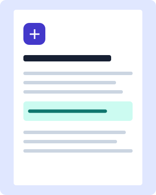
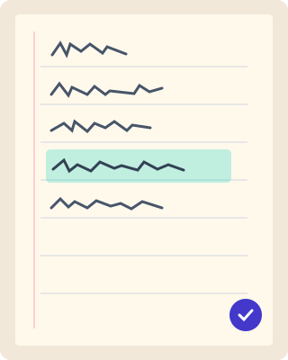
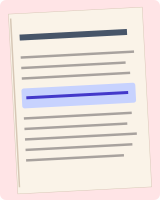

Exemplo autoral · 1 página
Um manual prático
Encontre orientações sem procurar em cada parágrafo.
Do papel à resposta
Uma anotação, um manual ou uma página escaneada. Leia, pergunte e confira cada resposta no documento original.

A oficina começa às 14h. Os materiais estão incluídos.
Comece com uma descoberta
Escolha um exemplo para conhecer o fluxo. As transcrições já estão preparadas; aqui não simulamos OCR ao vivo.

Encontre orientações sem procurar em cada parágrafo.

Transforme uma informação difícil de localizar em uma resposta.
Veja como revisar palavras incertas antes de perguntar.
Escolha um arquivo ou comece por um exemplo.
Revise a transcrição e palavras que precisam de atenção.
Siga a referência da resposta até a passagem usada.
Escolha um PDF ou uma imagem. Você poderá revisar o texto antes de fazer perguntas.
PDF, JPEG ou PNG · até 10 MiB · até 5 páginas
Nesta proposta, arquivos não são lidos nem enviados. A seleção demonstra apenas a interação.
Seu documento, em contexto
Anotação de exemplo · 6 de outubro
Encontro no ateliê do bairro, no sábado.
A oficina começa às 14h. Os materiais estão incluídos.
Leve apenas um avental e sua vontade de aprender.
Documento ilustrativo autoral. A imagem e o texto não são resultado de OCR ao vivo.
Compare com o original. Uma correspondência textual não garante que a transcrição esteja correta.
A oficina começa às 14h. Os materiais estão incluídos.
Salvar cria uma nova revisão e remove respostas baseadas no texto anterior. Nesta proposta, a edição é local.
Trechos do exemplo acompanham o idioma escolhido. Documentos enviados manterão seu idioma original.
A oficina começa às 14h. Os materiais estão incluídos.
Página 1 · ver trechoA citação corresponde ao texto preparado. Não verifica a fidelidade de OCR, a veracidade do original ou a correção semântica da resposta.
Esboços vetoriais originais para revisão. O primeiro conecta leitura e passagem; o segundo conecta páginas e pergunta.